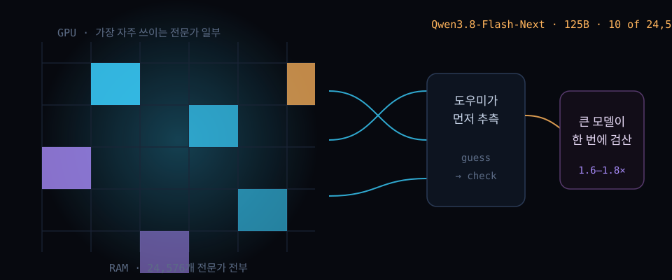

VRAM 12GB에 125B를 얹는 법 — 11일 만에 스타 1만 개 찍은 '스트라타'의 전문가 페이징과 32GB 램 표

결론부터. 서버용 초대형 모델이 게임용 PC로 내려온 건 새 모델이 생겨서가 아니라, MoE 모델의 '한 번에 조금만 쓰는' 성질을 하드웨어 3단에 맞춰 쪼갠 배치가 나왔기 때문이다.
지난 9월 24일 만들어진 GitHub 저장소 '스트라타(Strata)'가 열하루 만에 스타 1만 개를 넘겼다. MIT 라이선스 인스톨러 한 번 돌리면 Qwen3.8-Flash-Next 125B가 내 PC에서 뜨고, 구경 8080번 포트에 로컬 API까지 열린다.
10월 4일(현지) 해커뉴스 머리글로 올라온 실사용 후기 스레드(표 550)가 결정적이었다. "생각보다 훨씬 잘 돈다"는 4090 사용자 한 명의 초당 124토큰 인증에서 시작해, 구형 2060까지 포함한 체감 속도 논쟁이 붙었다.
30초 요약
| 항목 | 내용 |
|---|---|
| 무슨 도구 | 스트라타 — Qwen3.8-Flash-Next 125B(오픈웨이트)를 일반 PC에서 돌리는 MIT 라이선스 추론 엔진+인스톨러. Windows·Linux 지원, 9월 24일 저장소 생성 → 10월 5일 스타 10,929 |
| 핵심 기법 | 24,576개 전문가 중 토큰당 10개만 활동하는 MoE 구조를 공략: 자주 쓰는 수천 개만 GPU에 상주, 전량은 RAM, 탐색표는 SSD. 여기에 소규모 도우미가 다음 토큰을 추측하면 큰 모델이 한 번에 검산 — 같은 답을 1.6~1.8배 빨리 |
| 실측 속도 | 개발사 자체 측정: RTX 5070(12GB)+Ryzen 5 7600에서 Q2_0 생성 94토큰/초, 프롬프트 읽기 2,650토큰/초. RX 9070 XT(16GB) 쪽은 60토큰/초. 3090(24GB) 체감 100~140토큰/초 예상 |
| 필요 사양 | VRAM 12GB 이상(NVIDIA RTX 20~50번대, AMD RX 7700XT 이상 일부), RAM 32GB 이상(전 크기으론 64GB), 디스크 여유 약 80GB, 모델 다운로드 약 70GB |
| 연결법 | 브라우저에서 http://127.0.0.1:8080 채팅·모니터. 코딩 에이전트는 'OpenAI 호환' 공급자 주소로 http://127.0.0.1:8080/v1 을 쓰고, Claude Code는 ANTHROPIC_BASE_URL만 |
| 주의 | 속도표는 개발사 자체 측정이고 첫 적재 중 1~3분 PC 정지는 정상 동작. 2비트대 양자화의 정확도 저하는 별도 논쟁 중인 문제 |
1. 무엇이 터졌나
숫자부터 깔자. 스트라타는 2026년 9월 24일 생성된 저장소로, 10월 5일 기준 스타 10,929·포크 959·MIT 라이선스다. 올리는 모델은 알리바바 큐원 팀의 Qwen3.8-Flash-Next — 파라미터 125B급인데 토큰당 실제로 움직이는 건 24,576개 전문가 중 10개뿐인 혼합전문가(MoE) 모델이다. 스트라타는 이 모델의 양자화본(Q2_0, IQ2_XS, IQ3_XXS, IQ3_S 등)을 받아 PC에서 띄운다.
설치 경험의 결이 기존 로컬 LLM 도구와 다르다. Windows에서 START-HERE.bat 더블클릭(리눅스는 ./setup.sh) 한 번이면 그래픽카드를 자동 인지하고, 모델 크기와 컨텍스트 길이, 이미지 입력 여부를 질문 세 개로 물어본 뒤 다운로드(약 70GB)부터 기동까지 간다. 설치가 끊기면 다시 실행한 자리에서 이어 붙는다.
눈길이 가는 건 기본 설치 경로다. README는 Claude Code·Cursor·Copilot 같은 코딩 에이전트에 저장소 주소와 문서 경로(AI_SETUP.md)를 넘기면 기종 판별부터 모델 선택, 설치, 기동, 앱 연결까지 에이전트가 대신 끝낸다고 안내한다. 'AI가 AI를 설치한다'는 이 안내문 자체가, 뒤에서 다시 만나게 될 논쟁의 불씨다.
속도 실측은 개발사가 두 대의 일반 게임용 PC로 공개했다. RTX 5070(12GB)+Ryzen 5 7600+64GB RAM 조립에서 Q2_0 크기가 생성 94토큰/초, 32K짜리 문서 읽기 2,650토큰/초. AMD 편(RX 9070 XT 16GB)에서 Q2_0은 생성 60토큰/초였다. VRAM이 크면 더 빨라진다며 3090(24GB) 기준 100~140토큰/초를 예상치로 제시했다. 해커뉴스 본문 제목의 '100T/s'는 이 구간과 4090 사용자의 실측 인증(초당 124토큰)을 잇는 지점이다.
2. 왜 대단한가
① '125B는 무리'라는 전제 자체가 MoE 앞에서 흔들린다
서버용 모델을 개인 PC에 얹는 전통적 접근은 잘라먹기(양자화)와 계층 분할이었다. 스트라타가 다르게 본 지점은 모델의 '모양'이다. MoE는 토큰마다 전문가 24,576개 중 10개만 깨어난다. 즉 전량 상주는 메모리 문제일 뿐, 매 계산마다 전부 관여하는 구조가 아니다. 배치가 좋아야 할 이유가 원리부터 다른 셈이다.
② GPU·RAM·SSD 3단 계층 — 카운터, 저장각 비유가 정확하다
문서가 택한 비유는 부엌이다. 자주 쓰는 물건은 카운터, 나머지는 저장각. 기술적으로는 이렇게 놓인다: 가장 많이 호출되는 전문가 수천 개는 VRAM에 상주, 전문가 전량은 RAM, 큰 탐색표는 SSD. 라우터가 고른 전문가가 VRAM에 있으면 곧바로 계산으로 직행하고, 창고(RAM·SSD)에서 건져야 하는 것만 값이 비싼 이동이 따른다. 계산 경로가 라우팅 결과에 따라 갈라지는 셈이다.
③ 추측-검산(추측 복원)으로 생성 속도에 1.6~1.8배를 더 얹었다
두 번째 레버는 도우미 모델이다. 값싼 작은 모델이 다음 몇 토큰을 미리 추측하면, 큰 모델이 그 전어를 한 번에 훑어 맞은 것만 확정한다. 답은 추측 없이 돌렸을 때와 같고, 체감은 1.6~1.8배 빨라진다. 여기에 긴 텍스트를 최대 8,192토큰 덩어리로 삼켜 초당 1,000토큰 넘게 읽게 하는 사전처리 경로까지 있다. 로컬 LLM의 고질병인 '읽기 속도'를 정면으로 건드린 부분이다.
④ 램 용량이 곧 메뉴판이다 — 설치 프로그램이 모델 크기를 고른다
동일 모델의 압축 단계별 적합 규격을 인스톨러가 램 용량으로 자동 추천한다. 32GB에서는 코더, 48GB에서는 IQ2_XS(빠른 쪽은 Q2_0), 64GB에서는 IQ2_XS 권장, 96GB 이상에서는 IQ3_S나 언슬로스의 약 4비트본. 코더는 전문가 절반을 잘라낸 코드 전용 버전인데, 개발자 측정 기준 전체 모델 SWE-bench Verified 점수의 91%를 RAM 32GB에 담는다. 코드 밖(중국어·일본어 포함)로는 약하다는 점을 문서가 직접 밝힌다. 로컬 모델 생태계에서 '용량별 메뉴판'이 설치기에 내장된 건 드문 일이다.
3. 바로 써먹기
개발사가 공개한 두 조립 실측을 그대로 놓는다(4K 토큰 답변, 32K 프롬프트 기준. NVIDIA의 Q2_0 행만 엔진 0.1.36, 나머지는 0.1.26).
| 크기 | RTX 5070 12GB 생성 | RTX 5070 읽기 | RX 9070 XT 16GB 생성 | RX 9070 XT 읽기 |
|---|---|---|---|---|
| Q2_0 | 94토큰/초 | 2,650토큰/초 | 60토큰/초 | 1,160토큰/초 |
| IQ2_XS | 79토큰/초 | 2,090토큰/초 | 52토큰/초 | 1,110토큰/초 |
| IQ3_XXS | 62토큰/초 | 1,750토큰/초 | — | — |
| IQ3_S | 53토큰/초 | 1,620토큰/초 | — | — |
| 코더 | 55토큰/초 | 2,180토큰/초 | 44토큰/초 | 1,420토큰/초 |
연결은 로컬 API 한 문단으로 끝난다. 브라우저로 http://127.0.0.1:8080 에 접속하면 채팅 화면, GPU·CPU·RAM 실시간 모니터, 설정 화면이 나온다. 외부 앱에는 'OpenAI 호환' 공급자로 붙인다 — 베이스 주소 http://127.0.0.1:8080/v1에 API 키와 모델 이름은 아무 값이나 넣으면 통한다. 앤트로픽 API 앱(예: Claude Code)은 ANTHROPIC_BASE_URL=http://127.0.0.1:8080, Codex CLI처럼 Responses API를 쓰는 앱은 /v1/responses 경로다.
# Codex CLI 등에서 OpenAI Responses API로 붙이는 경우의 베이스 형태
http://127.0.0.1:8080/v1 # OpenAI 호환 채팅
http://127.0.0.1:8080/v1/messages # 앤트로픽 호환
# 위 경로 표기는 Niko1221/Strata 문서 기준: https://github.com/Niko1221/Strata스마트폰·다른 PC에서 쓰려면 --host 0.0.0.0 --api-key <secret> 플래그를 붙이는데, 문서가 "키는 반드시 걸라"를 명시한다. 내부망 노출과 무키 노출은 다른 문제다. 기본값은 요청 1개씩 처리하는 직렬이고, 동시 2개까지 묶는 병렬 옵션을 켤 수 있으나 12GB 카드에서는 개별 응답이 느려진다.
첫 실행의 예절 하나를 더 적어둔다. 모델이 RAM에 35~55GB를 실고 그래픽카드용으로 일부를 잠그는 동안 PC가 1~3분 멈춘 것처럼 보일 수 있다 — 설계된 동작이고 창을 닫으면 안 된다. 첫 채팅의 긴 메시지는 3만 토큰당 1분쯤 읽는 시간이 들고, 이후 발화부터는 수 초 안에 답이 시작된다.
4. 해외 반응 쟁점
'속도의 절반만 이겼다'는 반론. 스레드에서 가장 뿌리 깊게 나온 지적은 MoE 배치의 비대칭이다. 생성은 전문가 몇 개만 움직여 유리하지만, 프롬프트 전체를 훑는 읽기는 모든 파라미터가 관여한다. 실제로 128K 컨텍스트 실측을 올린 사용자는 RTX 2060(8GB)에서 Q2_0 생성 33토큰/초, 읽기 약 600토큰/초를 보고했다 — 32K 기준 표의 2,650토큰/초와 격차가 크다. 컨텍스트가 길수록 표의 숫자와 체감이 벌어질 수 있다는 뜻이다.
양자화 2비트대와 정확도. "압축 모델의 벤치마크를 따로 내는 게 표준이 돼야 한다"는 댓글에, 양자화 열화를 신호-잡음 관점으로 다룬 최근 논문을 근거로 붙이는 이가 있었다. 그 논의를 인용한 쪽의 요지는 4비트 양반은 성능 보존이 보통, 2비트는 넓게 깨진다는 것. 이 저장소의 주력 크기(Q2·IQ2)는 정곡을 찔린 위치다.
속도 대 정확도. 벤치 기준 없이 " anthropic 모델보다 2.5배 빠르고 주권이 있다"는 옹호 댓글과, "속도는 절반의 미덕, 왕복이 줄어드는 정확도가 이득"이라는 반론이 같은 스레드에 붙었다. 체감 성능이 '초당 토큰 × 다시 묻지 않을 확률'의 곱이라는 관점이다.
'AI에게 설치를 맡겨도 되나'. README의 AI 에이전트 설치 안내를 그대로 따라 붙여넣은 사용자가 있었고, 파이프-시전 설치보다 오히려 낫다는 옹호가 붙었다: 에이전트는 계획을 먼저 보여주는데 bash에는 그마저 없다는 논리다. 반대편은 루트 권한을 무인 과정에 통째로 맡기는 신뢰 전가 문제를 들었다. 'AI가 AI를 설치하는'장면의 첫 번째 일상 논쟁으로볼 만한 교환이었다.
5. 마시기 전 주의
첫째, 속도표는 전부 개발사 자체 측정이다. 엔진 버전이 행마다 다른 표주석까지 붙어 있으니(0.1.36/0.1.26 혼재), 남의 PC 숫자를 내 견적서로 쓰면 안 된다. 둘째, 정확도에 관해 개발사도 인정한 구석이 있다: 코더는 코드 밖에서 약하고, 언슬로스의 UD-Q4_K_XL은 64GB PC에서 SSD를 읽어가며 돌아 생성이 7~8.5토큰/초로 떨어진다. 셋째, 이미지 입력은 AMD에서 리눅스만 CPU 경유로 지원하고 윈도우에서는 아직 안 된다. 넷째, "요청 직렬 처리·키 필수·첫 적재 정지는 정상"의 운영 규약을 읽지 않고 쓰면 '먹통' 오해를 부르기 딱 좋다.
한 줄로 접자. 스트라타의 진짜 발명은 새로운 양자화도, 새로운 모델도 아니다. MoE가 태생부터 약속해놓고 PC 위에서는 아무도 보여주지 못한 '한 번에 조금만 쓰는' 성질을, GPU-RAM-SSD 3단 배치와 추측-검산으로 처음 일반 PC 가격표에 연결한 일이다. 로컬 AI의 진입선이 '서버 구매'에서 '게임용 PC 사양 확인'으로 옮겨가는 국면이라면, 먼저 12GB와 32GB를 재는 게 순서다.
바로 가기
같이 읽기
550B를 128GB 맥북에 — 오픈 웨이트가 개인 기기로 내려오던 첫 물결의 계산법 — 스트라타가 이은 '서버 모델을 안방으로' 계보의 9월 편.
활성 파라미터 4.4%의 설계학 — MoE가 '큰데 싼' 모델로 가는 법 — 왜 125B짜리가 토큰당 10개 전문가로 도는지를 모델 설계 쪽에서 본 10월 4일 잔.